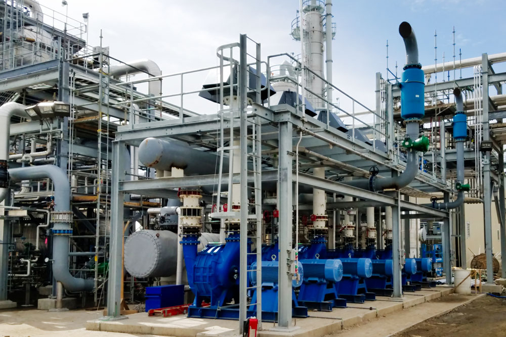

Critical Process
Petro-Chemical
API 617, API 672, hazardous gases, NACE material selection, explosion-proof areas, Zone 0, and ATEX requirements demand absolute reliability.
- Sulphur recovery blower
- Refinery tail gas blower
- Sour gas blower
- H2S blower
- Offload gas recovery
- Gas booster
- Vapor control
- Thermal oxidation
- Flare system exhauster